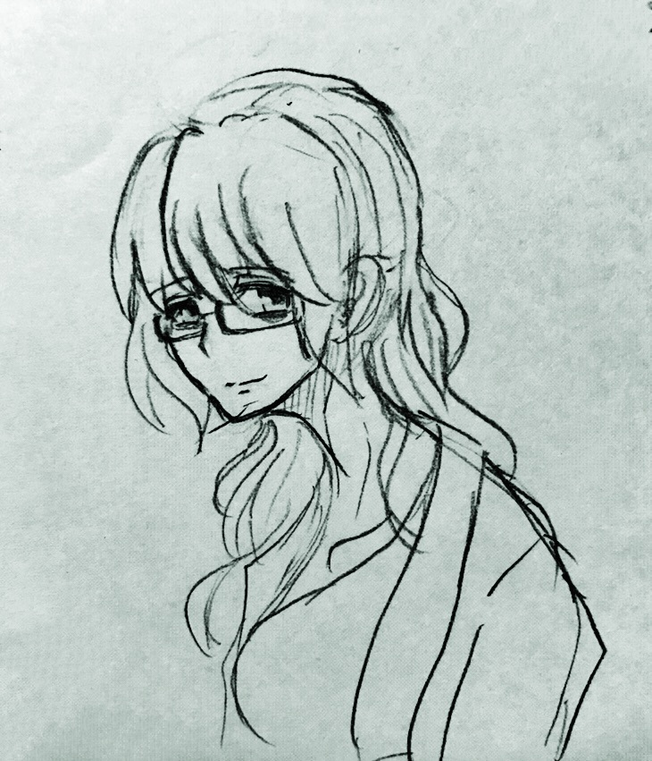

| 銀丞約望 | |
|---|---|
|  | |
| 年齢 | 29(仮) |
| 性別 | 女 |
| 身長 | 170cm |
| 髪型 | 銀髪 |
| 目 | たれ目クマ有 |
| 一人称 | わたし |
| 二人称 | 君、○○君 |
| 出典 | しがない世界で牛丼屋 |
銀丞約望(ぎんじょうやくも)は、十三代魔王体制の魔術管理局長である。
先祖は銀丞有朔であり、何事も思考し世界を楽しむ遺伝子は脈々と受け継がれている。
プレサージュ地方にてステラとつゆだくの3人暮らしをしている。
つゆだくの転生の原因を作った人物であり、その裏にはアベルへの思いがある。
魔王族の幹部でありながら、自らの意思で行動を起こしているあたりこの世界ではイレギュラーな人物である。
趣味は骨董品集めで過去の人類が残していった遺産を眺め、
どんなふうに使っていたのだろうとニマニマするのが好き。
銀丞の家系が代々魔王の補佐官としての責務を全うしていたため、約望もそのように十二代魔王に付き従っていた。
年が近かったアベルやカインとは幼き頃から面識があり、特にアベルとは仲が良かった。
16歳のころ周りから浮いていた約望だが、たった一人親友といえる人に出会う。
名をアリサというプレサージュ地方の田舎娘だった。
仕事の関係でプレサージュに赴くたびにアリサと会うほどの中になっていた。
23歳の時、アベル蹶起により魂が抜けてしまったアベルを蘇生するために、
銀丞有朔の資料をひたすら読みあさり、一つの可能性に行き着く